Version 5.0
Last updated: December 12, 2017
ezMarker is a web application that allows instructors at Wilfrid Laurier University to bulk upload grades and feedback into MyLearningSpace (MLS), with the integration of the Brightspace API supported by D2L. The goal of ezMarker is to solve the issues regarding inefficient manual grade uploading through the current MyLearningSpace interface. On average, it can take markers a few hours to manually upload grades for one class. Marking time is cut down to minutes with the use of ezMarker's bulk file uploading.
In order to login, the user needs to have MyLearningSpace credentials.
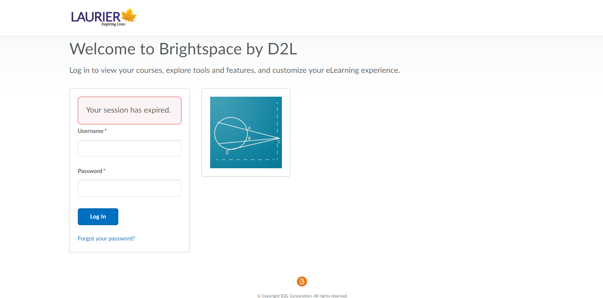If login is unsuccessful, the user is be shown an error message, and needs to retry.
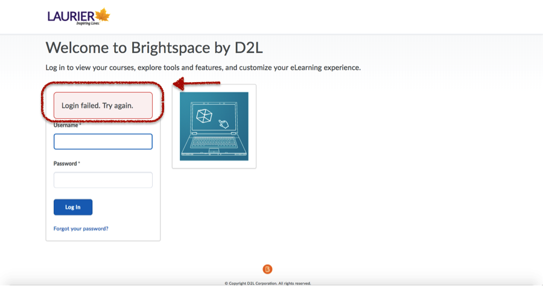After login, a user is presented with a list of courses they have permission to access and upload grades to.
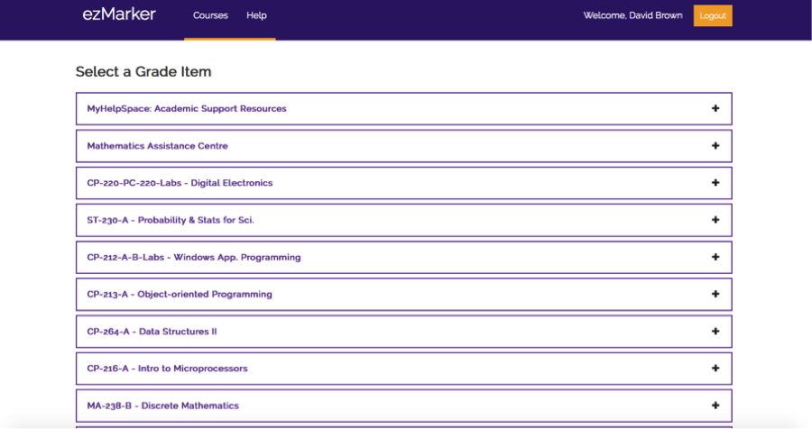
To modify a specific course, the user can select that course and expand it to show the course's grade items.
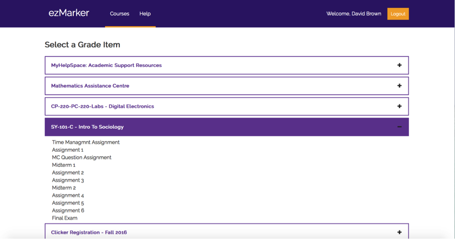Once the user selects a grade item, they are redirected to the grade item page. This page allows the user to update the course maximum, upload an Autograder file, or upload grades manually.
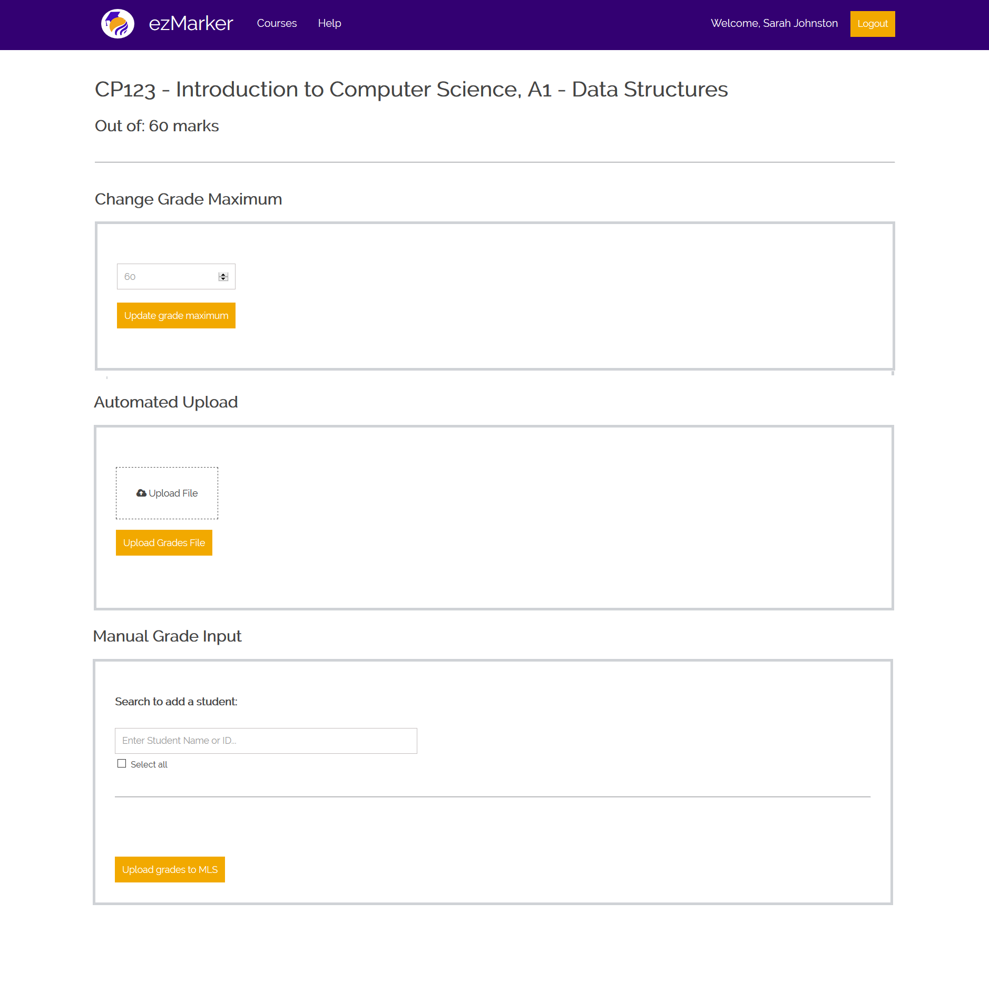The user can update the grade item's maximum grade value by entering a positive number and submitting the form with Update Grade Maximum button.

When the user submits the form, a message appears to confirm the user wants to proceed.
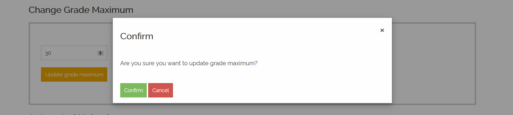
If the user confirms and they submit a valid grade maximum, a success message will appear and the UI will be updated appropriately.
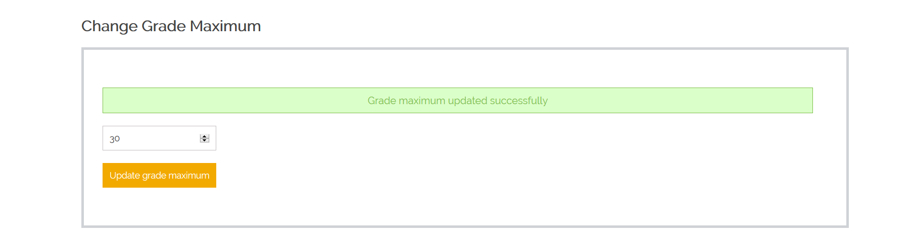Note:
The user is prompted to choose a file to upload that follows the Autograder file format of brightspace_id, grade, name, comment.
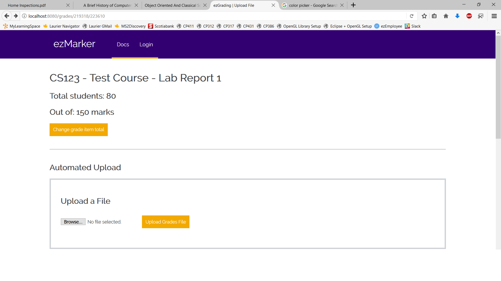If the file is valid and grades are uploaded through the Brightspace API, the user is brought to the report page. Otherwise, they will be shown an error message. If the file is valid but some of the marks are not good, a pop-up will appear to give the user a chance to correct the errors and re-submit.
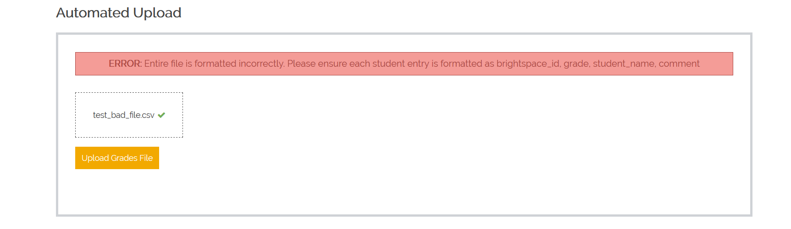The user can also upload grades manually. A student can be added in two ways. Search for a student using their full name or using their Laurier ID. The select all option will quickly add input boxes for all students.
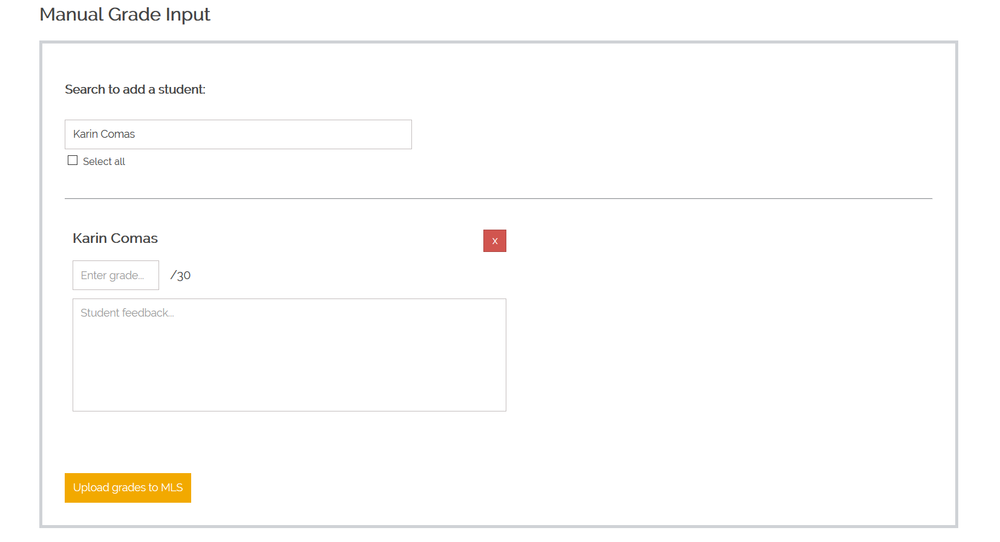Grade input is required and must be a positive number. Some grade items allow for the grade to exceed the maximum grade value, while others do not. The comment for student feedback is not required.
If there are any errors with the user's upload, a pop-up will appear with an appropriate warning or error message. The user must fix these issues and re-submit to successfully upload student grade, otherwise cancel their upload. A warning message saying the inputted grade exceeds the grade item's maximum grade value may be ignored. The UI is just confirming with the user that this was their intention. However, an error message will appear if the grade item does not allow the inputted grade to exceed the maximum grade value. In this case, the user is forced to input a grade less than or equal to the maximum grade value.
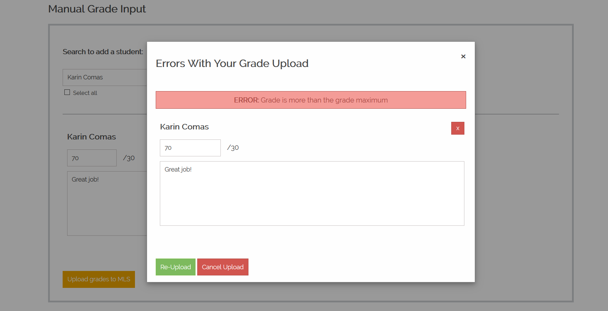The report page shows a summary of the user's upload. It shows how many grades were successfully set by the Brightspace API, any errors from the API, and a summary of the students that had their grades changed.
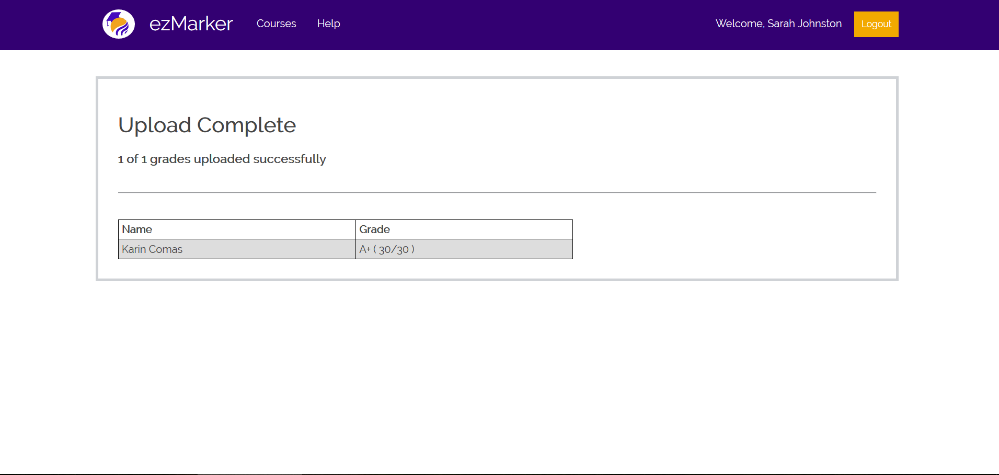The user can logout (end their MLS session) by pressing the logout button of the navigation bar.
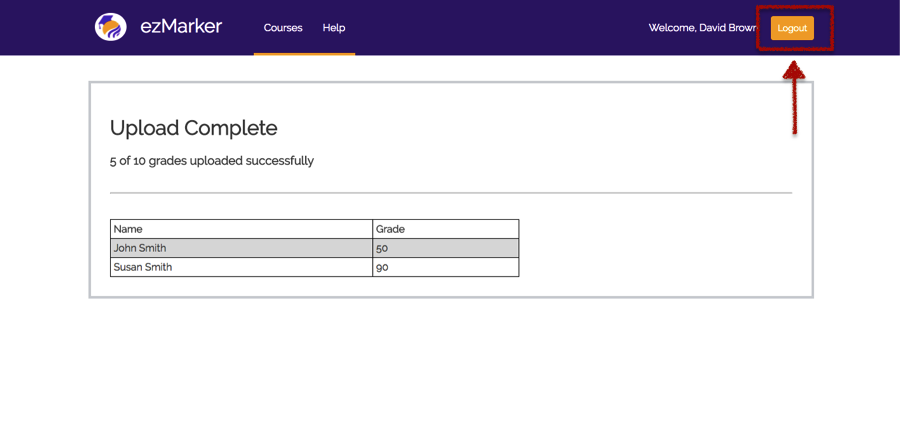Note:
Author: Hind Althabi
- Added more detail to the Introduction.
- Added reference links.
Author: Hind Althabi
- Fixed spelling and grammar
- Updated images to current UI.
Author: Sarah Johnston
- Updated to be similar to php help document.
- Fixed image border.
Author: Hind Althabi
- Added note regarding logging out redirect.
- Added note regarding manual upload.
- Fixed spelling and grammar.
Author: Shuaib Reeyaz
{% endblock %}